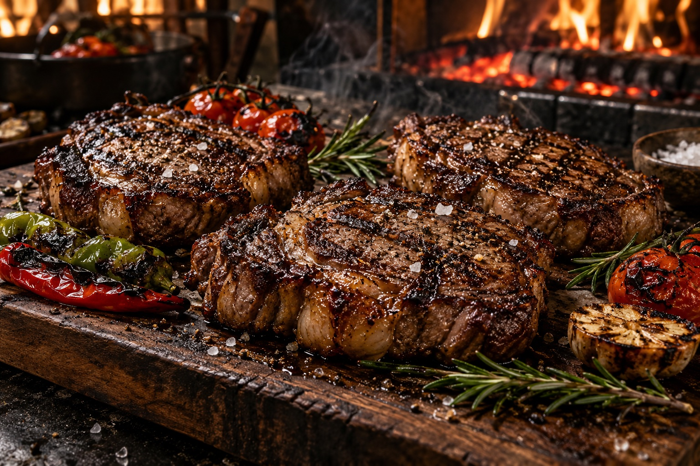

Мясо с огня
Поджаренная корочка, аромат углей и ваша любимая прожарка. Подберём мясные блюда под формат события и пожелания гостей.
Обсудить менюПредложение новой структуры. В меню — один продукт в фокусе; в организации — последовательность действий без повторных фото еды.
Один разговор — чтобы понять вашу идею. Затем меню, расчёт и согласованный план мероприятия.
Дата, площадка, гости и ваши пожелания. Начать можно с идеи — детали уточним вместе.
Блюда, подача и обслуживание. Готовим индивидуальный расчёт под состав заказа.
Фиксируем смету, тайминг и задачи команды. Вы знаете, что будет на вашем событии.
Состав работ, логистику, оборудование и уборку согласуем отдельно.